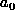
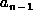
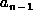
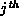
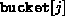
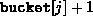

Data Structures and Algorithms
with Object-Oriented Design Patterns in Java
Data Structures and Algorithms
with Object-Oriented Design Patterns in JavaSo far all of the asymptotic running time analyses presented in this chapter have resulted in tight big oh bounds. In this section we consider an example which illustrates that a cursory big oh analysis does not always result in a tight bound on the running time of the algorithm.
In this section we consider an algorithm to solve the following problem:
Sort an array of n integers ,  , ..., ,
each of which is known to be between 0 and m-1 for some fixed m.
An algorithm for solving this problem,
called a bucket sort ,
is given in Program
, ..., ,
each of which is known to be between 0 and m-1 for some fixed m.
An algorithm for solving this problem,
called a bucket sort ,
is given in Program  .
.
A bucket sort works as follows: An array of m counters, or buckets , is used. Each of the counters is set initially to zero. Then, a pass is made through the input array, during which the buckets are used to keep a count of the number of occurrences of each value between 0 and m-1. Finally, the sorted result is produced by first placing the required number of zeroes in the array, then the required number of ones, followed by the twos, and so on, up to m-1.
The analysis of the running time of Program
is summarized in Table .
Clearly, the worst-case running time of the
first loop (lines 7-8) is O(m)
and that of the second loop (lines 9-10) is O(n).
| time | ||
|
statement | cursory analysis | careful analysis |
| 7-8 | O(m) | O(m) |
| 9-10 | O(n) | O(n) |
| 11-13 | O(mn) | O(m+n) |
| TOTAL | O(mn) | O(m+n) |
Consider nested loops on lines 11-13.
Exactly m iterations of the outer loop are done--the number of iterations of the outer loop is fixed.
But the number of iterations of the inner loop depends
on bucket [j]--the value of the counter.
Since there are n numbers in the input array,
in the worst case a counter may have the value n.
Therefore, the running time of lines 11-13 is O(mn)
and this running time dominates all the others,
so the running time of Program is O(mn).
(This is the cursory analysis column of Table ).
Unfortunately, the cursory analysis has not produced a tight bound.
To see why this is the case,
we must consider the operation of Program more carefully.
In particular, since we are sorting n items,
the final answer will only contain n items.
Therefore, line 13 will be executed exactly n times--not mn times as the cursory result suggests.
Consider the inner loop at line 12. During the  iteration of the outer loop, the inner loop does  iterations. Therefore, the conditional test at line 12b is done  times. Therefore, the total number of times the conditional test is done is

So, the running time of lines 11-13 is O(m+n)
and therefore running time of Program is O(m+n).
(This is the careful analysis column of Table ).
 Copyright © 1998 by Bruno R. Preiss, P.Eng. All rights reserved.
Copyright © 1998 by Bruno R. Preiss, P.Eng. All rights reserved.